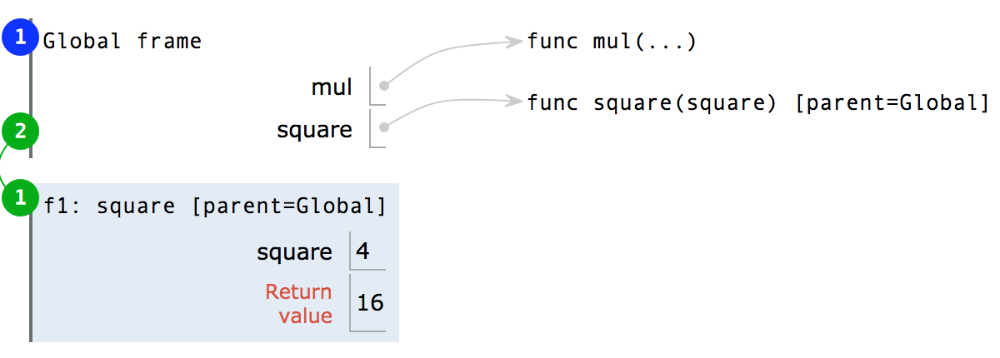
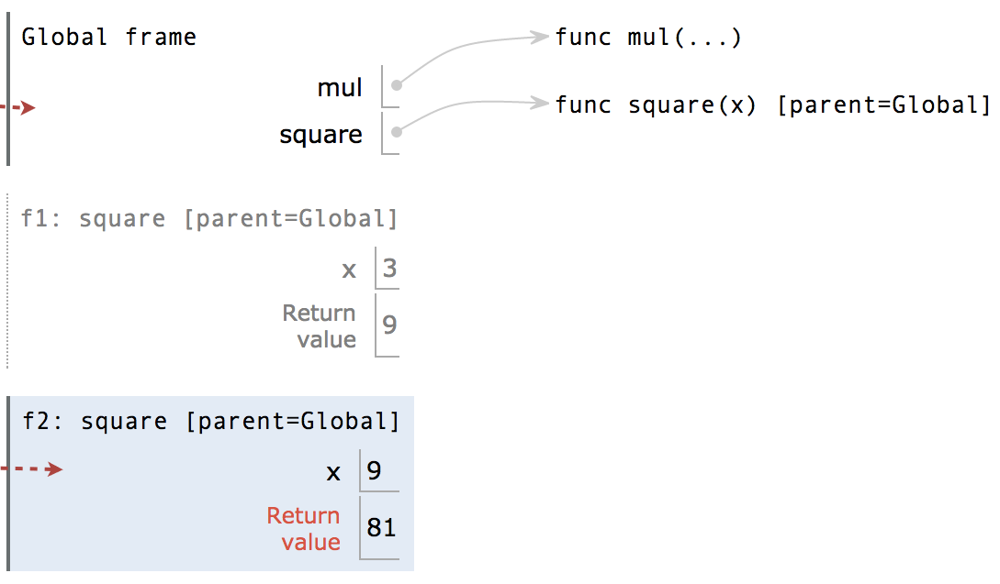

Ch1
Most important two things I’ll say all day:
- An environment is a sequence of frames.
- A name evaluates to the value bound to that name in the earliest frame of the current environment in which that name is found.
在python中，赋值语句是bind name with value，因此如果出现赋值语句f=max，然后再改变max的值，不会影响f的值，也就是f仍然是求最大数的函数
assignment rule for assignment statement：
- 先对“=”右边进行估值
- 将左边的name与右边估好的值进行bind
定义函数的格式：
>>> def <name>(<formal parameters>): #this line is Function signature
...
return <expression> ;the rest is Function body
这个过程中，(1)一个函数被创建 (2)一个name与进行此操作的函数进行bind (3)return expression不会立刻被evaluate，它只在函数被调用时被evaluate
不管是import还是define的函数，每个函数在environment中都是一行，以 func 开头，后面是函数名和形参（无正式形参则用...表示）。函数名称重复两次，一次在frame中，一次在函数定义中，前者叫做bound name，后者叫做intrinsic name（内在名称）。两者不同在于：可以有很多不同名字指代同一个函数，但这个函数只有一个intrinsic name。而在evaluation时用的name时在frame中的name，而非intrinsic name。
关于None： None值represents nothing. 用于作为没有明确返回值的函数的返回值，而且None作为表达式的值不会被python interpreter 显示
- Pure Function：仅返回值而没有side effect的函数，（而且每次input相同则output必相同）
- Non-Pure Function：会有side effect的函数，如print
Environment
到现在为止，我们的program的含义仍然不明显，比如如果一个形参和一个函数重名了呢？在不同环境中同一个name有不同的含义
对应的diagram：

该段代码中，作为函数名的square和作为形参的square会与不同的值bound，两者在不同的环境下估值。如前所述，A name evaluates to the value bound to that name in the earliest frame of the current environment in which that name is found. 在calling时， return mul(square,square) 会先经历新建的square frame，找到作为形参的square以此来估值，而非以global中作为函数名的square进行估值。
Multiple environment（多环境）
一个用户定义函数的生命周期：
- def statement：创建一个新函数，并在现在的frame中将name和这个函数绑定
- call expression：对operator和operand进行估值
- calling：创建一个新local frame(only accessible to that function)，并将函数的形参(parameter)与实参(argument)绑定，在这个新环境中执行函数体(body)
- 关于calling，详细版可以看看textbook上的sum_squares函数，说的非常清楚！
下面通过一段代码的diagram来看看执行过程
第一步，将第一条import语句和第二条def语句（两行算作一句）所产生的变量（在这里即函数）放入global frame中
第二步，对第三条语句的operator和operand进行估值
第三步，开始调用相应函数进行计算
Ch1.4
默认参数值：
>>> def pressure(v, t, n=6.022e23):
"""Compute the pressure in pascals of an ideal gas.
v -- volume of gas, in cubic meters
t -- absolute temperature in degrees kelvin
n -- particles of gas (default: one mole)
"""
k = 1.38e-23 # Boltzmann's constant
return n * k * t / v
>>> pressure(1, 273.15)
2269.974834 #如果没提供第三个参数，则用定义中默认的值
>>> pressure(1, 273.15, 3 * 6.022e23)
6809.924502 #如果提供了第三个参数，则忽略默认值
Ch1.5 Control
- simple statement: expression,return,assignment
- compound statement: def,control
format of compound statement:
<header>:
<statement>
<statement>
... #this whole is called a clause
<separating header>:
<statement>
<statement>
...
...
if <expression>:
<suite>
elif <expression>:
<suite>
else:
<suite> #conditional statements
while <expression>:
<suite> #iteration
Testing
- Assertions.
assert fib(8) == 13, 'The 8th Fibonacci number should be 13'
def fib_test():
assert fib(2) == 1, 'The 2nd Fibonacci number should be 1'
assert fib(3) == 1, 'The 3rd Fibonacci number should be 1'
assert fib(50) == 7778742049, 'Error at the 50th Fibonacci number'
格式：assert
如果
Note：一般test都不会直接写在interpreter里面，而是写在同个文件或卸载同目录文件_test.py中
- Doctest.
>>> def sum_naturals(n):
"""Return the sum of the first n natural numbers.
>>> sum_naturals(10)
55
>>> sum_naturals(100)
5050
"""
total, k = 0, 1
while k <= n:
total, k = total + k, k + 1
return total
>>> from doctest import testmod #第一种测试函数
>>> testmod()
TestResults(failed=0, attempted=2)
>>> from doctest import run_docstring_examples #第二种测试函数
>>> run_docstring_examples(sum_naturals, globals(), True)
Finding tests in NoName
Trying:
sum_naturals(10)
Expecting:
55
ok
Trying:
sum_naturals(100)
Expecting:
5050
ok
第3行的空行可有可无，需要注意的是测试的argument和预期的behavior都要放在docstring中，以及>>>符号不能忘
Ch1.6 higer-order function And environment
- 作为参数的函数
例如数列求和的通项函数term(n)
def summation(n, term):
total, k = 0, 1
while k <= n:
total, k = total + term(k), k + 1
return total
- 作为通用方法的函数
概念：用一些函数来表达通用的计算方法(general methods)，而与它们调用的特定函数无关
例如，迭代改进的通用方法
迭代改进的算法从方程的guess解（推测解）开始，不断应用update函数来逼近方程条件，并用close函数与允许误差(tolerance)进行比较。
该improve函数是迭代求精的通用表达式，它并不会指定要解决的问题，细节会留给作为参数传入的update和close函数
一个具体的例子是黄金分割比x的求解，它的一个特性是可以通过反复对给定正数guess进行1/guess+1操作逼近x，另一个特性是x^2-x-1=0。综上，求解黄金分割比的update和close函数就可以这样写
>>> def golden_update(guess):
return 1/guess + 1
>>> def square_close_to_successor(guess):
return approx_eq(guess * guess, guess + 1)
>>> def approx_eq(x, y, tolerance=1e-15):
return abs(x - y) < tolerance
- 嵌套定义
lexical scope:本地变量可以访问更大环境(parent)中的变量，但大环境中的变量无法访问定义在本地的变量
-
作为返回值的函数
-
currying：将单个多参数函数转变为一连串单参数函数
-
Lambda expression：
形式：lambda
lambda expression不需要绑定在某个特定name上，它会被evaluate为一个函数，这个函数没有intrinsic name，在diagram中写成 func λ(x)
- Decorators
>>> def trace(fn):
def wrapped(x):
print('-> ', fn, '(', x, ')')
return fn(x)
return wrapped
>>> @trace
def triple(x):
return 3 * x
#equals
>>> def triple(x):
return 3 * x
>>> triple = trace(triple)
#个人理解：trace作为decorator对定义的函数进行修饰，使调用该函数不仅打印return值，还打印函数地址
Debug session (left for future) ......
Lab2 & Discussion2
assignment statement & def statement & call expression
-
assignment :
-
evaluate right value :当遇到name时，先在current frame中查找，再再parent frame中查找，再在parent的parent frame中查找，直到找到为止
-
bind to left name :判断“=”左边的name是否在current frame中，若在则覆盖；若不在则在current中创建该name并bind
注意并不是将外部帧中的该name的value修改，和C语言同理
-
def:
-
draw the function object :格式为 func & intrinsic name & (formal parameter) &parent frame
- judge : 该def中的intrinsic name在current frame中是否已有，若有，擦去；若没有，写入object表
-
bind :把def的函数对象与该name绑定
-
call:
-
估operator—>估operand—>新frame—>label新frame—>argument赋给parameter—>execution—>return value
注意built-in和imported函数不用draw new frame
Short circuiting
and 和 or 表达式的结果并不都是True或False，它们会返回最后一个evaluated value，比如 1 or False，返回的是最后一个evaluated value，即1
Lab3 & hw2
Ch2
ch 2.3
-
sequence:
-
sequence operation:
-
sequence iteration: for statement
-
sequence unpacking: 对多重嵌套sequence的子元素进行提取
>>> pairs = [[1, 2], [2, 2], [2, 3], [4, 4]]
>>> same_count = 0
>>> for x, y in pairs:
if x == y:
same_count = same_count + 1
>>> same_count
2
-
sequence processing:
- List comprehensions: 元素映射/筛选元素
[<map expression> for <name> in <sequence expression> if <filter expression>] # List comprehension general format, filter part can be omitted- Aggregation: 将sequence中的元素合并成一个value，如sum,min,max函数
-
Lists
-
range
-
strings
-
trees
-
Linked lists
Ch 2.4 Mutable data
-
object: A combination of data value and behavior；python中的任何value都是一个对象，有对应的data和method(class function)
-
mutable object: value会随着程序执行而变化，比如list；
list在赋值时，会将“=”左边的name指向对应的list对象，所以若有多个name指向同一个list object，对其中一个使用method，其他的都会相应变化。如果想要只复制value，可以通过lst2=list(lst1)进行。
为了判断两个name是否指向同个object，通过name1 is name2的真假来判断
-
Tuple: 是immutable sequence，格式为
(element1,element2,...)，括号可省略（一般不省略）；一个tuple的元素不可更改，但是可以更改其中mutable element中的元素 -
Dictionaries: 属于mutable object
-
目的：通过描述性的index，而非连续的数字index来存储和获取值
- 格式：
numerals = {'I': 1.0, 'V': 5, 'X': 10} - 一些语法：
>>> numerals['X']
10 #look up
>>> numerals['L'] = 50
>>> numerals
{'I': 1, 'X': 10, 'L': 50, 'V': 5} #add new pair
>>> sum(numerals.values())
66 #combine all the value
>>> dict([(3, 9), (4, 16), (5, 25)])
{3: 9, 4: 16, 5: 25} #convert a list of pairs into dictionary
>>> numerals.get('V', 0)
5 #look up value of 'V' and return it; if not existing,return 0
>>> {x: x*x for x in range(3,6)}
{3: 9, 4: 16, 5: 25} #dictionaries comprehension create a new dictionary object
注意：Dictionaries的key-value pair是无序的，所以在interpreter中显示时次序可能会变。
key不可以是或包含mutable value，所以不能用list作key；一般用Tuple
nonlocal声明：- 声明了该
name不在current frame中，而是在第一个出现该name被赋值的frame中，通过nonlocal声明，就可以修改current frame之外的变量 - 用途：可以用于有local state的函数，如withdraw()
- 限制：python关于name的access有这样的限制，如果没有
nonlocal声明，那么对于一个name的引用必须在同一frame中，不可以在非本地帧中找到某name，而在本地帧中进行bind。因为python在本地帧中遵循的原则是，若左边的name未在本地出现过，那么就在本地帧中创建该名字并赋值，这时就会造成混淆：evaluate时，到底是看nonlocal的name值，还是刚刚创建的name值呢？ nonlocal赋值的好处：可以创建一个函数抽象的多个实例，且各个实例之间会随着程序执行而发生状态改变，但彼此之间互不干扰，如：
1 def make_withdraw(balance):
2 def withdraw(amount):
3 nonlocal balance
4 if amount > balance:
5 return 'Insufficient funds'
6 balance = balance - amount
7 return balance
8 return withdraw
9
10 wd = make_withdraw(20)
11 wd2 = make_withdraw(7)
12 wd2(6)
13 wd(8)
wd和wd2是两个不同的withdraw实例，有不同的parent（两次make_withdraw的的调用），都是通过make_withdraw创建，其中一个的balance变化不会影响另外一个，各管各的。
nonlocal赋值的局限性：re-binding操作不仅仅是返回值，它还可能会改变环境；同一个对象，由于它的状态会变化，因此不能根据它的data信息来识别它的identity，这叫做"change"；两个值相等的对象，未必就是同一个对象，这叫做"sameness"。
Disc4
data abstraction
Disc5
Iterables: 一种可以遍历其元素的对象，比如list、string等。任何在apply了built-in iter function之后返回iterator的object都是iterator。
Iterators: 也是一种object，通过调用next函数，追踪iterable中下一个元素，可以遍历iterable中的元素，调用完后此iterator对象状态变化，只剩没被遍历的元素；如果对iterator调用iter函数，则返回自身。
当iterator中已经遍历完所有元素后，再次调用next会raiseStopIteration的exception。但怎样算遍历完了呢？不仅仅局限于直接调用 next 函数到没有元素为止，其他方法比如 list(iterator1) 也会遍历元素，因为list 需要直到 iterator1 中的所有元素，而iterator这种对象是implicit sequence，采用lazy computation，不会存储序列中的所有元素，而是在调用next后再弹出下一个元素，因此为了获取所有元素，也就implicitly遍历了 iterator1
A comparison : Iterables和Iterators的关系就像book和bookmark一样，可以有多个bookmark插在同一本book的不同位置，遍历此book；此外，bookmark并不知道book自身的变化，因此当book变化（remove或add或append等），bookmark还是插在相应的页之间，但调用 next 函数时会根据new book的状态来执行；当iterator弹出 StopIteration 后，相当于bookmark已经插在book的back cover之后了，所以不管如何改变iterable，对该iterator调用next函数只会弹出 StopIteration ，见下例2
注意：iterators在遍历元素时不影响原来的iterable
>>> lst = [1, 2, 3, 4]
>>> list_iter = iter(lst)
>>> next(list_iter)
1
>>> list(list_iter) # Return remaining items in list_iter
[2, 3, 4]
Generators: 一种特殊iterator，通过定义个性化的generator函数，return得到generator object
yield statement: generator函数中特有的语句
Generator函数的执行过程：调用generator函数（含yield statement的函数）产生一个 generator 对象，但不会执行generator函数的body；调用generator函数后，每次调用对该generator对象调用next函数，都会使对应的generator函数body开始执行，直到遇见yield statement（即返回yield后面的表达式的值），或遇到暂停点（比如return）；当暂停在某个 yield statement时，会记住此时离开的位置和状态，下次继续从该暂停点开始继续执行body
如果没元素可yield了，则raise StopIteration，与iterator类似
也可以用yield from statement从 iterator 或 iterable 中yield元素，见下例